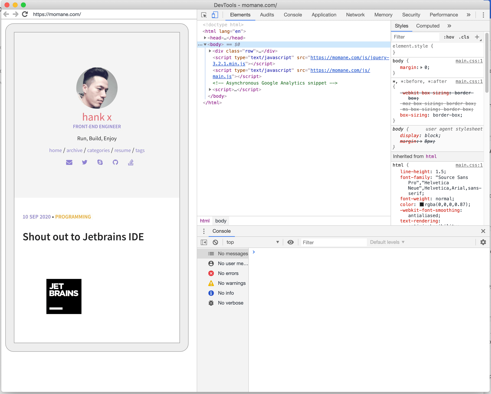

遇到个需求需要调试在微信中打开的网页。之前没有做过，搜了一圈那个所谓的在微信对话框中打开debugx5.qq.com的方法已经过时无用， 打开就显示你所使用对内核非X5内核。至于TBStool更是在2017年就已经停止更新，打开就闪退，浪费时间安装。
看来因为开发人员对QQ搞出来的X5内核怨声载道，所以微信不得不妥协，弃用了X5内核作为内置浏览器内核了。
至于spy-debugger等工具，我嫌麻烦也没装。
找半天找不到有用的方法，好在同样的问题在手机上的Chrome里面打开也存在，于是就想先在Chrome里调试，万一能一起修复了呢。
没想到就发现了Chrome调试工具居然也可以调试微信浏览器里打开的页面。看起来微信内建浏览器也采用了Chromium内核了。
以下步骤同时适用于在电脑上调试手机浏览器网页调试和微信内建浏览器网页， 目前只限Android系统。iPhone还没去看。
-
打开手机的开发者模式，这个各个手机打开方式都差不多，通过多次点击版本号来开启。
-
在开发者模式里面打开 USB 调试功能
-
把你要调试的网址发送到微信对话框里，然后点击打开
-
将手机通过USB数据线连接到电脑
-
在电脑上打开Chrome浏览器
-
新建一个标签页，输入网址
chrome://inspect/#devices。以前你需要在 Chrome 的开发者工具里面通过点击多个菜单来打开，Chrome现在将这个页面独立出来了，体验更佳。 -
这时候你的手机应该会收到
允许当前连接的设备访问手机数据的通知，点击允许即可 -
在电脑端 Chrome 的
chrome://inspect/#devices里面就应该能看到你手机 Chrome 里面打开的页面了 -
同时如果你已经在微信内建浏览器里打开了网页，你应该也能看到一个名为
com.tencent.mm的浏览器里面打开了一个页面。
-
点击网址下面的
inspect就可以打开调试页面，其拥有电脑端Chrome开发工具的几乎所有调试功能。 
不得不说发现这点还是挺惊喜的。